Here are a few pictures of adegenet
version 1.4-0 working on a linux system. Users are encouraged to
submit their own artwork.
DAPC server - one dimensional scatterplot:
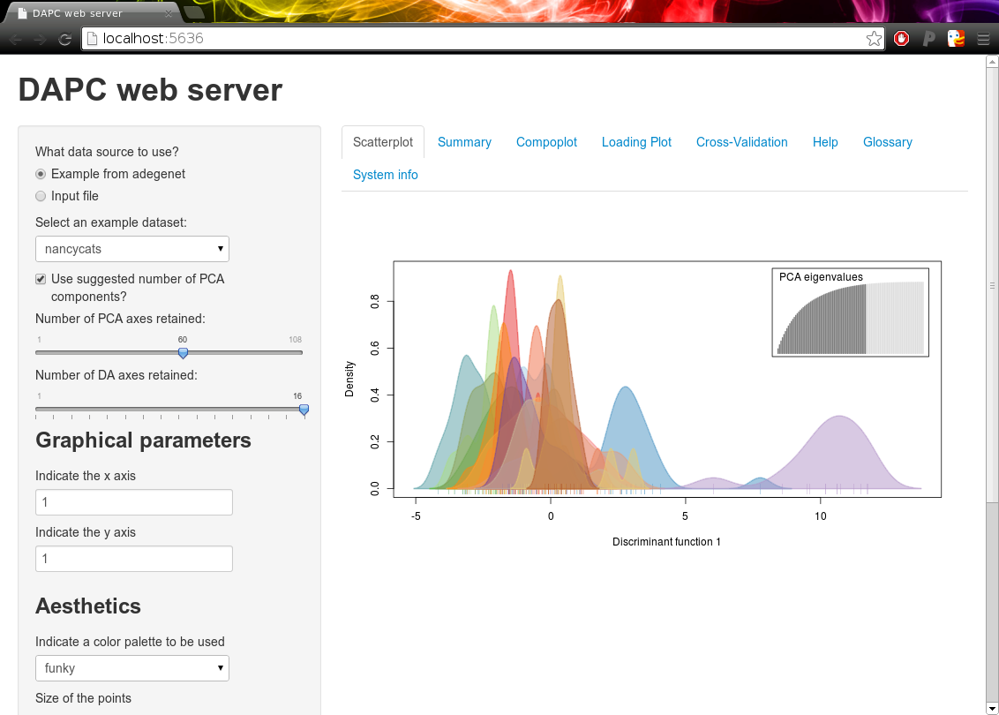
DAPC server - two-dimensional scatterplot:
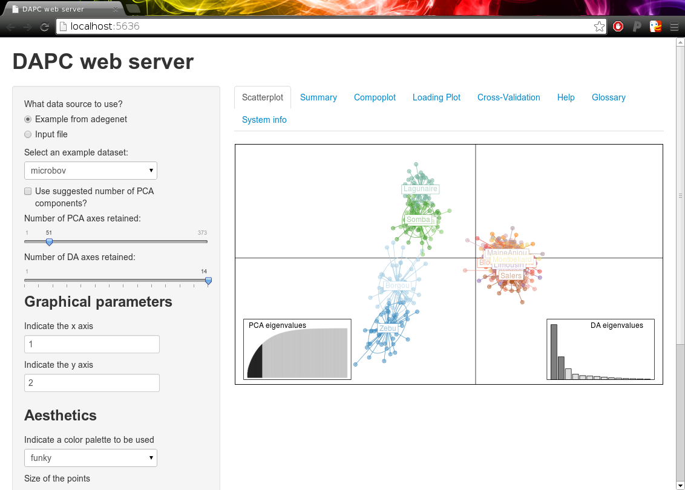
DAPC server - cross-validation:
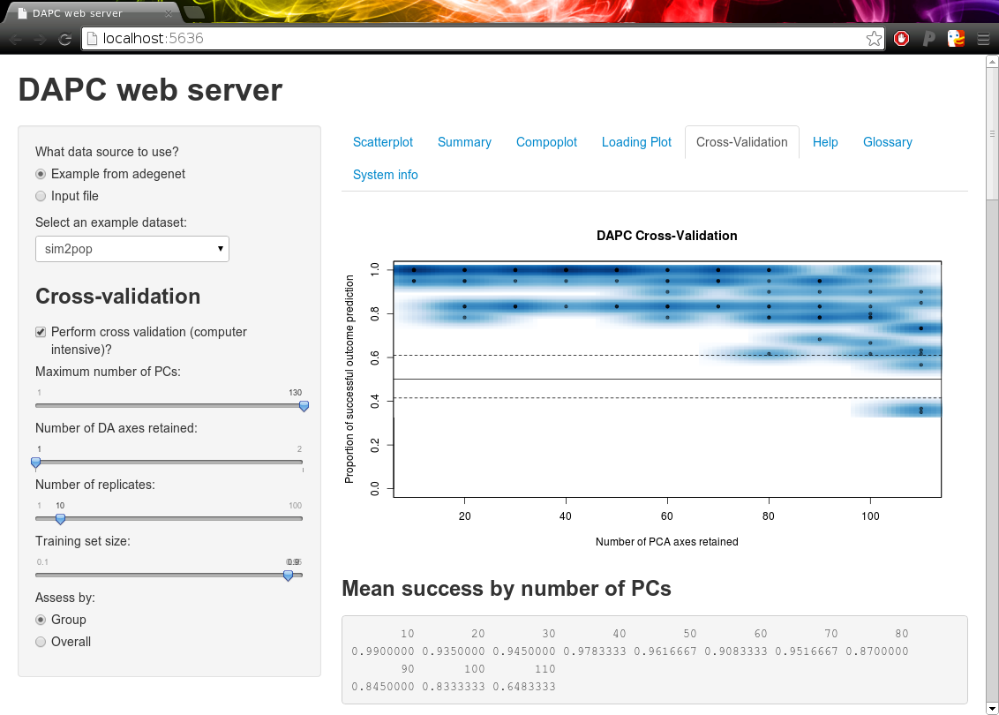
DAPC of simulated data with superimposed minimum spanning tree:
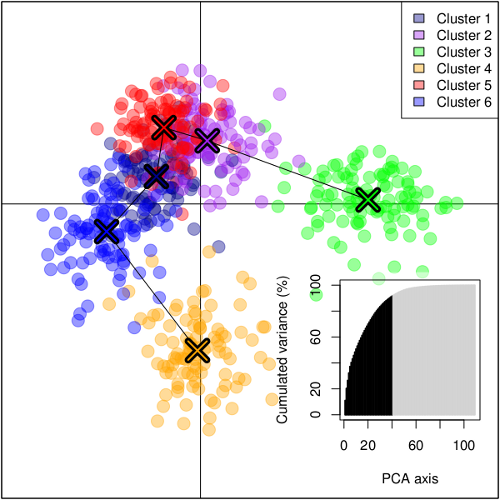
DAPC of H3N2 dataset:
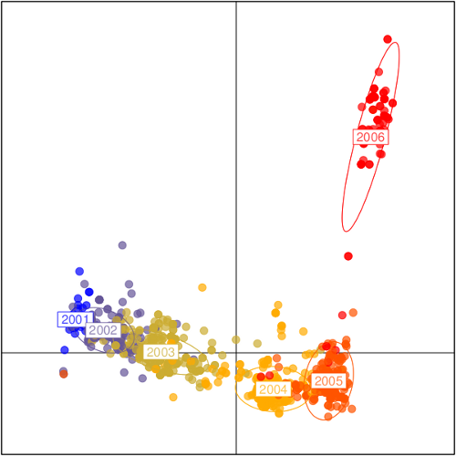
A variant of the same analysis:
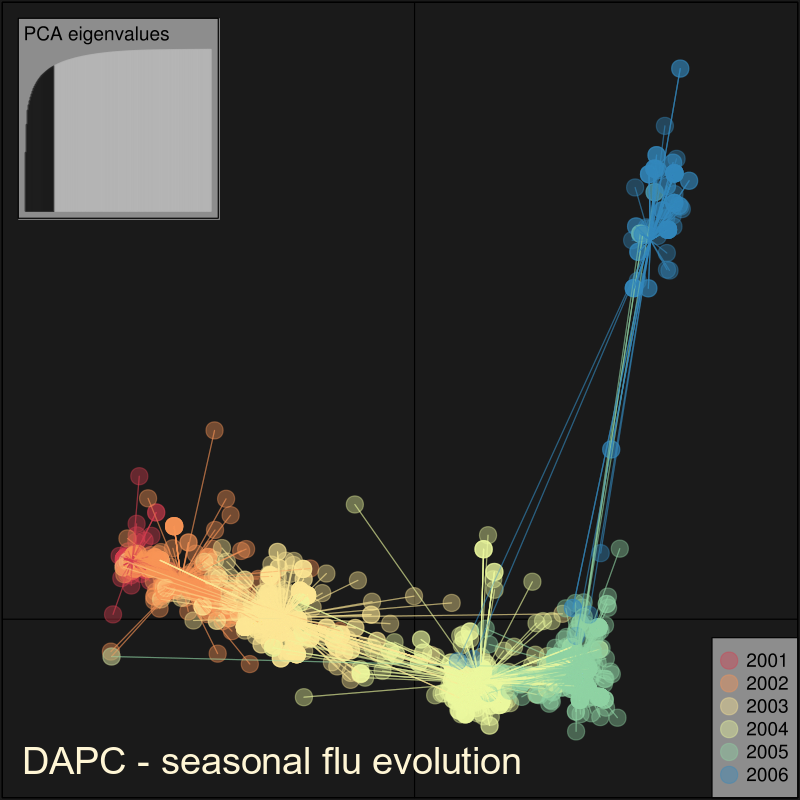
DAPC plot of group
membership (compoplot), microbov dataset:
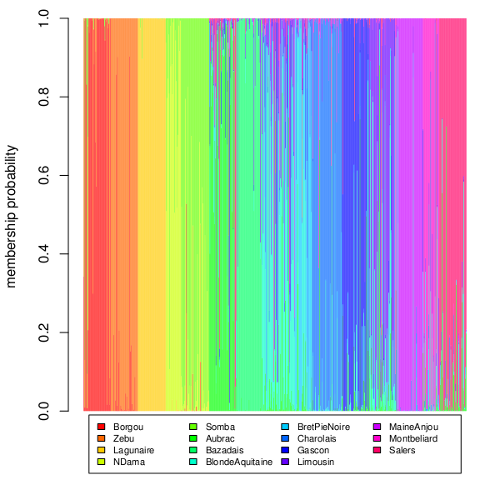
Interpolation and mapping of
sPCA scores (simulated data):
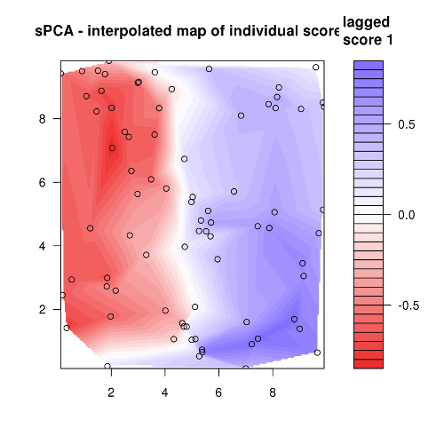
sPCA colorplot of the rupica
dataset:
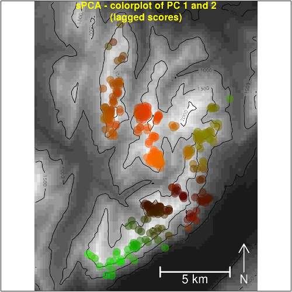
Multiple co-inertia analysis
in the example of microbov dataset:
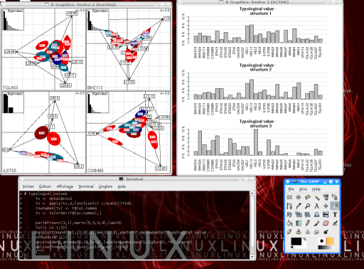
Monmonier algorithm example:
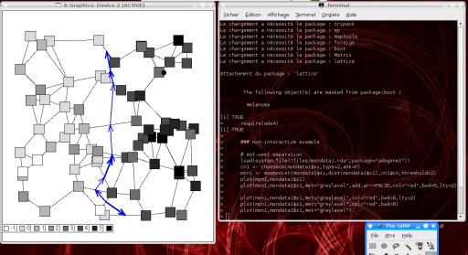